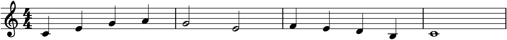

Most people who want to write music never do. Not because they lack ideas — everyone who has ever had a tune stuck in their head has had an idea — but because between the idea and the page stands a wall of notation, theory, and software, and no one ever walks them through it in order. The theory books assume you can already read music. The software tutorials assume you already know what a chord is. The composition treatises assume both, and a conservatory education besides.
This book assumes none of it. It starts at silence — a blank staff, a program you have not opened yet — and ends with you scoring a piece of your own for a small orchestra and reading the score you wrote. In between, every idea is introduced once, in the order you need it, and immediately put to use inside the one piece of software that will carry you the whole way: MuseScore 4, which is free, runs on every desktop operating system, and is good enough to typeset the examples you are about to read. In fact it did.
The one promise
Here is the promise this book makes, and the single thing that makes it different from the shelf of theory books it sits beside:
Theory and tool are never separated. Every concept arrives with the exact steps to hear it, see it, and enter it in MuseScore. You will not learn what a perfect fifth is on one page and then, forty pages later, discover how to type one. The moment you meet an interval, a chord, a cadence, a modulation, you will also put it into a real score and press play. Music theory learned without sound is a kind of grammar with no language attached; this book refuses to teach it that way.
The consequence is a particular rhythm to each chapter. The prose explains an idea — why minor keys have three different sixth and seventh degrees, say, or why the dominant chord wants so badly to resolve — and then a short boxed walkthrough, marked In MuseScore, shows you the keystrokes to build it yourself. By the end you will not just understand music theory. You will be fluent in the tool that lets you use it, which is the part almost every course leaves out.
Every example is real
There is a second, quieter promise, and it is one you can verify with your own eyes. Every notated example in this book is real engraving — not a picture drawn to look like music, but an actual score, rendered by MuseScore from its own source, exactly as your scores will look when you write them.

That phrase in Figure 0.1 is the book’s running example. It is deliberately plain — eight notes’ worth of idea, the kind of thing anyone might hum. Its plainness is the point: over the coming chapters you will watch it acquire harmony, an inner voice, an accompaniment, a second instrument, and eventually a full ensemble, and at no stage will it have needed to be clever. Most real music is like this. A small idea, well developed, is worth more than a brilliant one abandoned.
Who this is for
You need no ability to read music and no prior theory. If you can find middle C on a piano you are ahead; if you cannot, Chapter 5 will show you. What you do need is the willingness to keep MuseScore open while you read and to actually do the small exercises, because composing is a physical skill as much as an intellectual one, and it lives in the hands.
If you already read music fluently, the early chapters of Part 1 will be review — but read the In MuseScore boxes anyway, because tool fluency is exactly what a classical training tends to skip, and it is what turns knowing into doing.
What the book covers, and where it stops
The path is cumulative. The eight parts are not a menu; each is built from the one before.
- Part 0 sets up MuseScore and teaches you to get notes into it — the pure mechanics, so that from Chapter 5 on the software is never in your way.
- Part 1 is notation itself: the staff, rhythm, scales, keys, intervals, and the markings that make a score playable.
- Part 2 is harmony — chords, how they are built from a key, and how to give a melody four singable voices.
- Part 3 is melody and phrase — what makes a tune work, and how a three-note motive can grow into a whole piece.
- Part 4 is form — the shapes (binary, ternary, rondo, and a first look at sonata) that hold a piece together across time.
- Part 5 moves from the piano to small ensembles: writing for two instruments, then four, with a working primer on counterpoint.
- Part 6 is a practical instrumentation primer — ranges, transposition, and what each family of instruments actually does well.
- Part 7 is an introduction to orchestration: composing with timbre, and scoring a piece for a chamber orchestra.
Five Projects and a Capstone are threaded through, and they reuse each other’s material on purpose: the melody you compose in Project 3 is the one you harmonize, then arrange, then orchestrate. Finish the book and you have not done a pile of disconnected exercises — you have a small portfolio, and one piece you have seen through from a single line to a full score.
The ceiling is deliberately intermediate. Full sonata-allegro form, richly chromatic harmony, and advanced orchestration — extended techniques, exotic percussion, the truly large orchestra — are out of scope, and Appendix D points you to the books that take them up. What is in scope is everything you need to write real, complete, satisfying music, and to read and understand a great deal more of it than you can today.
Before you turn the page
Install MuseScore 4 from musescore.org. It costs nothing. Open it once, click past the welcome screen, and leave it running. Chapter 1 begins there — with the empty window, and the first note we will put into it.
The distance from silence to a finished score is shorter than it looks. It is just longer than one step. Let’s take the first.